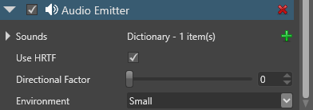

オーディオ エミッター
初級 プログラマー デザイナー
オーディオ エミッター コンポーネントは、空間オーディオを作成するために使用されるオーディオを生成します。任意のエンティティにオーディオ エミッター コンポーネントを追加できます。
オーディオ リスナーがオーディオ エミッターに近づいたり離れたりすると、サウンドのピッチとボリュームが変化します。
Note
オーディオ エミッターからのオーディオを聴くには、シーン内に少なくとも 1 つの AudioListenerComponent が必要です。
1. オーディオ エミッター アセットをセットアップする
［Scene view］で、オーディオ エミッターにするエンティティを選択します。

［Property grid］で［Add component］をクリックして、［Audio Emitter］を選択します。
次に、サウンドをエミッターに追加する必要があります。
［Audio Emitter］で
 (［Add a new item to the list］) をクリックして、サウンドの名前を指定します。
(［Add a new item to the list］) をクリックして、サウンドの名前を指定します。［Asset view］から、前のステップで追加したサウンドに、サウンド アセットをドラッグ アンド ドロップします。
または、
 (［Select an asset］) をクリックします。
(［Select an asset］) をクリックします。サウンド アセットを選択します。

ステップ 3 と 4 を繰り返して、必要なサウンド アセットをすべて追加します。
このオーディオ エミッターのプロパティを構成します。

| プロパティ | 説明 |
|---|---|
| Use HRTF | 頭部伝達関数 (HRTF) を有効にします。これを有効にすると、サウンドは 3D 空間内の特定のポイントから発しているように聞こえ、バイノーラル オーディオが合成されます。詳細については、「HRTF」を参照してください。 |
| Directional factor | オーディオの指向性を示します。値は 0 (最小) ～ 1 (最大) です。0 に設定すると、オーディオはすべての方向から放射されます。この設定は、スライダーまたは数値で制御できます。 |
| Environment | オーディオの残響タイプです。実際の環境の残響をシミュレートします (小、中、大、アウトドア)。 |
2. オーディオを再生するスクリプトを作成する
次に、サウンド アセットの再生と構成を行うスクリプトを作成する必要があります。
スクリプトでは、使用する各サウンドに対して AudioEmitterSoundController をインスタンス化する必要があります。
たとえば、2 つのサウンド MySound1 と MySound2 がある場合は次のようになります。
AudioEmitterComponent audioEmitterComponent = Entity.Get<AudioEmitterComponent>(); AudioEmitterSoundController mySound1Controller = audioEmitterComponent［"MySound1"］; AudioEmitterSoundController mySound2Controller = audioEmitterComponent［"MySound2"］;AudioEmitterSoundController の次のプロパティとメソッドを使用して、オーディオを再生および構成します。
| プロパティ/メソッド | 説明 |
|---|---|
| IsLooping | オーディオをループします。PlayAndForget() が true に設定されている場合は、何も行いません。 |
| Pitch | サウンドのピッチ (周波数) を取得または設定します。空間オーディオの場合は注意して使用する必要があります。 |
| PlayState | オーディオ エミッター サウンド コントローラーの現在の状態を取得します。 |
| Volume | オーディオのボリュームです。 |
| Pause() | オーディオを一時停止します。 |
| Play() | オーディオを再生します。 |
| PlayAndForget() | オーディオを 1 回再生してから、メモリをクリアします。発砲音のような短いサウンドに便利です。IsLooping をオーバーライドします。 |
| Stop() | オーディオを停止します。 |
次に例を示します。
mySound1Controller.IsLooping = true;
mySound1Controller.Pitch = 2.0f;
mySound1Controller.Volume = 0.5f;
mySound1Controller.Play();
このサウンドは、元のサウンドの 2 倍のピッチと半分のボリュームでループします。詳細については、AudioEmitterSoundController Stride API のドキュメントを参照してください。
3. オーディオ エミッター エンティティにスクリプトを追加する
Game Studio では、スクリプトは［Add component］の下にコンポーネントとして一覧表示されます。オーディオ エミッター エンティティにスクリプトを追加します。
［Scene view］で、オーディオ エミッターにするエンティティを選択します。
［Add component］をクリックしてスクリプトを選択します。